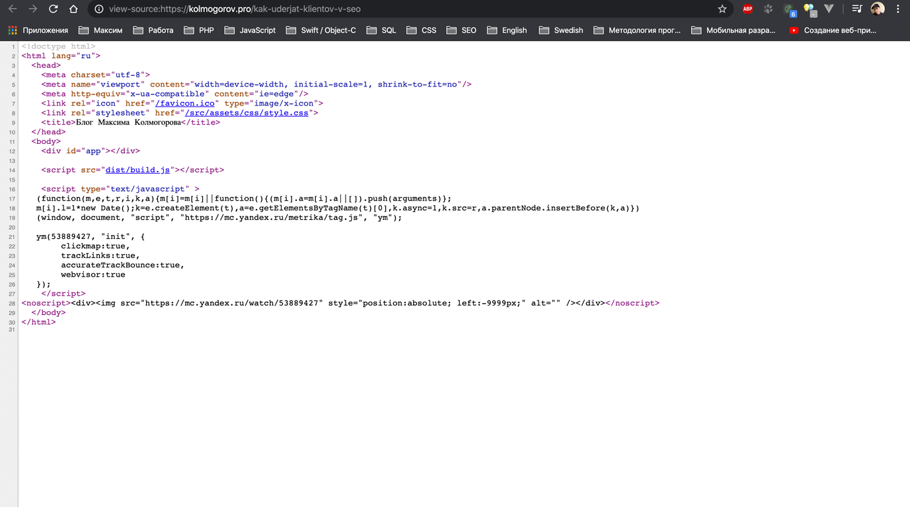
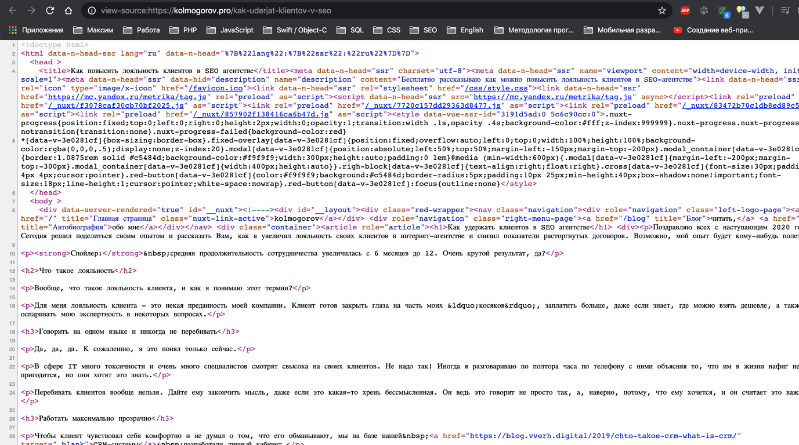
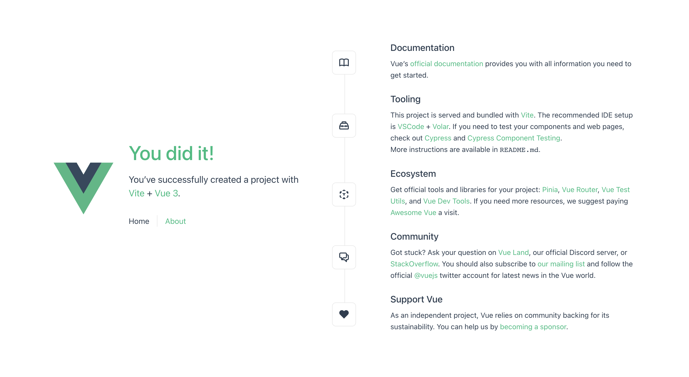
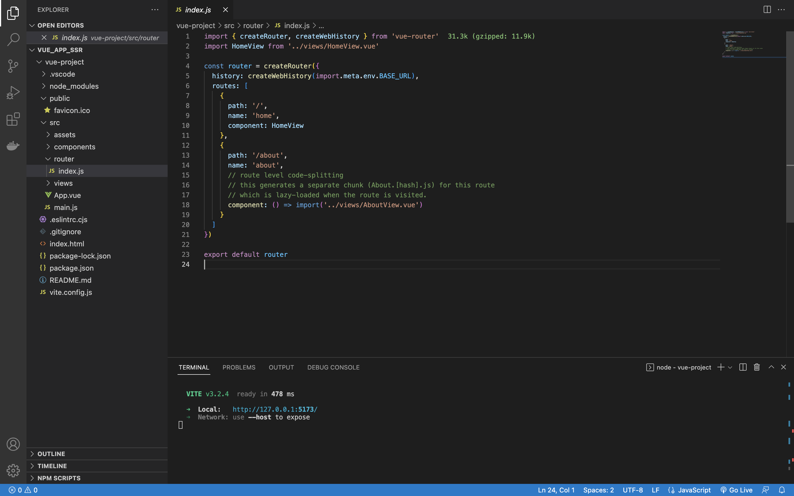
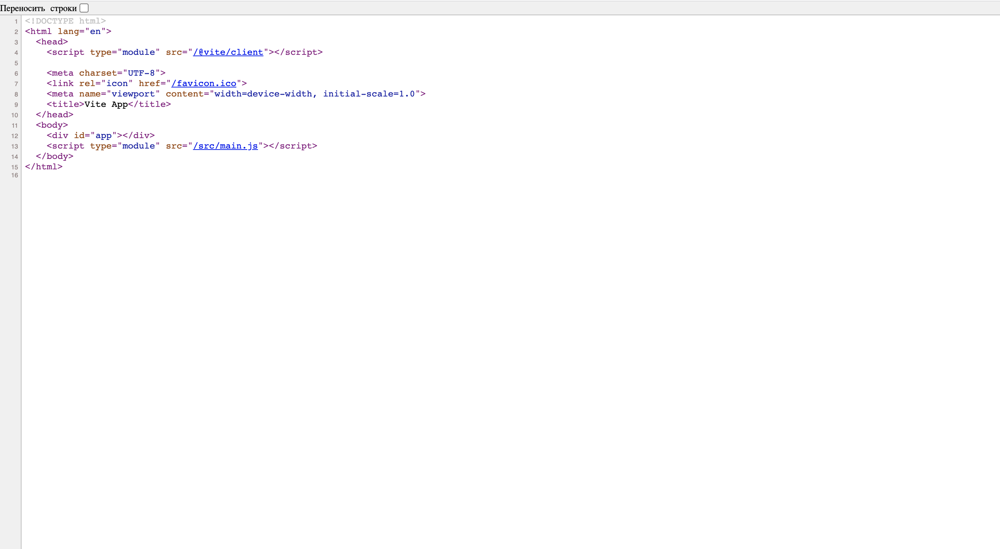
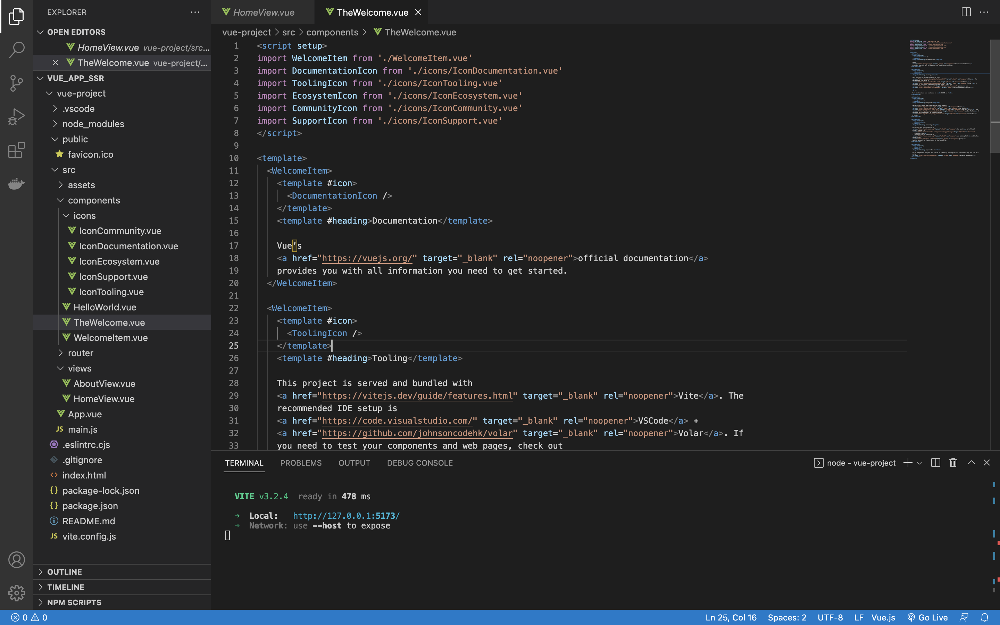
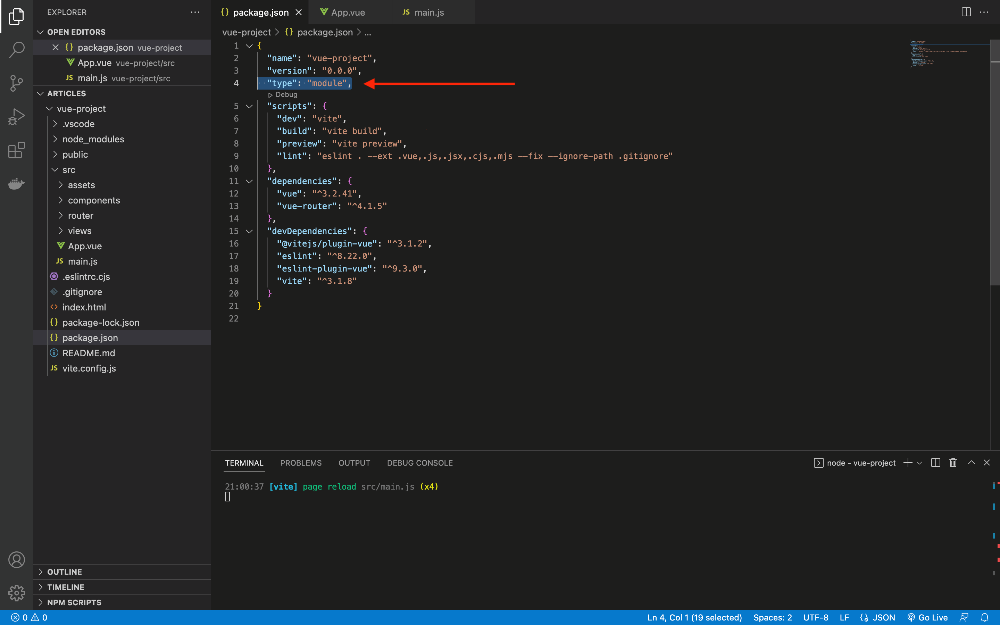
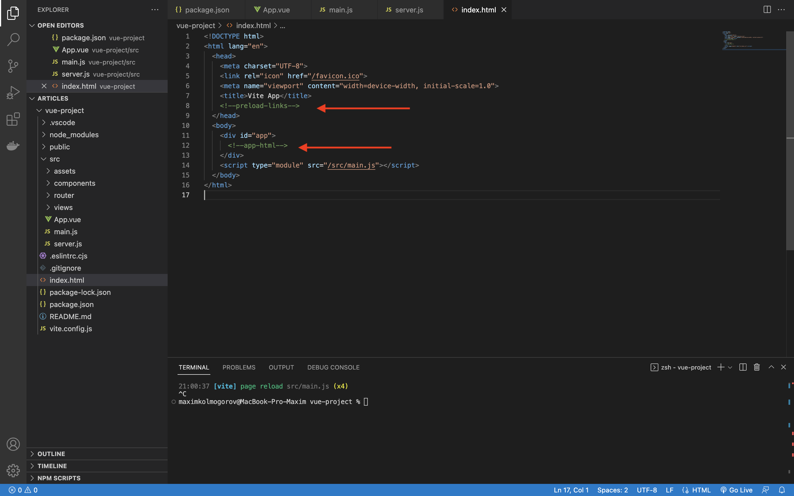
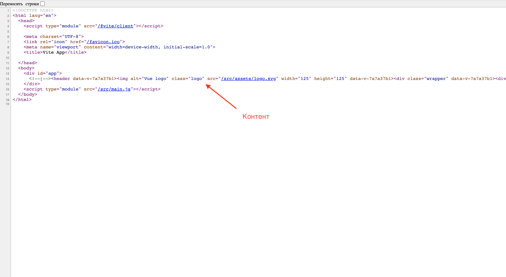
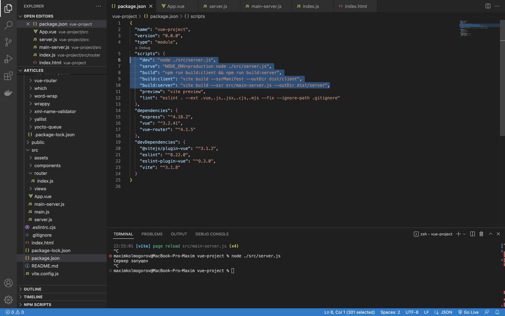

Что такое SSR
SSR – (с англ. Server Side Rendering) технология, позволяющая выполнять на сервере JavaScript код для достижения каких-либо целей.
Зачем нужен SSR и что такое SEO
SSR в первую очередь необходим для продвижения сайта в интернете. Есть такое направление в маркетинге как SEO. И чаще всего, SSR необходим именно для этого.
SEO – (с англ. Search Engine Optimization) это оптимизация сайта под нужды поисковой системы. Само по себе, SEO продвижение – это целое самостоятельное направление в маркетинге с большой концентрацией капитала бизнеса, поэтому для многих это очень важная тема. Особенно если бизнес генерирует деньги в интернете.
Видите ли, когда поисковый робот делает запрос к сайту, сделанному на реактивных фреймворках по типу: Vue, React, Angular, то он видит примерно это:

Никакого контента, только полупустой HTML. Хотя, если зайти на сайт с точки зрения обычного человека, мы увидим много текста и картинки.
А вот та же самая страница, но с уже включенным SSR:

Как видите, тут контент есть. Что вообще происходит?
Все просто – сайты, сделанные на JavaScript, обычно, инициализируются в реальном времени на стороне клиента. То есть, в браузере у пользователя. Поэтому поисковая система просто не может грамотно считать контент сайта, и значит, дать ему корректное место в поисковой выдаче. Тут вряд ли можно рассчитывать на первое место.
Автор не прав, поисковые системы индексируют JavaScript сайты…
Раздел для тех, кто где-то видел или читал какие-то новости на этому тему. Да, вы в целом правы. Но есть огромное но…
Поисковые системы это делают крайне неохотно, в том же Google можно ждать индексации сайта неделями, а то и месяцами. SEO-специалисты, как представители бизнеса, просто затюкают бедного программиста разными вопросами. Ведь им нужно быстро, здесь и сейчас.
Дьявол кроется в деталях. Чтобы поисковой системе проиндексировать JavaScript-сайт, ей нужны большие мощности. Сначала нужно сделать запрос к сайту, понять, что тут нет контента и это JavaScript-сайт. После этого надо выкачать сайт, куда-то сложить, запустить исполнительную среду JavaScript и только потом считать контент.
А теперь представьте классический сайт на PHP, C#, Python. Сделал запрос – получил контент. Все.
Как рендерить JavaScript на сервере
С помощью Node.js. Не любите Node.js? Извините, других способов у нас для вас нет.
Хотя внутри Node.js за исполнение JavaScript отвечает движок V8, можете его скачать с GitHub и засунуть в свой проект. Только учтите: V8 написан на С++. Как вы свяжите между собой кучу инструментов, мы представляем лишь примерно, но точно можем сказать что вам будет очень «весело».
Технически, возможно добавить SSR и в Laravel + Vue проект (помним, Laravel это PHP), но это будет выглядеть как-то так. Сомнительный монолит получится. Да и вам все равно потребуется Node.js, как ни крути. Так что, будем работать с Node.js.
Добавляем SSR во Vue приложение
Перед тем как начать, мы с вами сейчас создадим простое двухстраничное Vue-приложение. Это нужно лишь для того, чтобы вы поняли принцип рендеринга контента. Можете взять свое, но лучше давайте начнем вместе с простой базы, так вы сделаете меньше ошибок и будет понятно, что за что отвечает. А иначе, вопросов будет просто миллион.
Создаем Vue приложение
Инициализируем Vue приложение с помощью команды:
npm init vue@latest
Далее нам зададут некоторые вопросы, отвечаем на них:
- Project name. Пишите любое.
- Add TypeScript? Нет.
- Add JSX Support? Нет.
- Add Vue Router for Single Page Application development? Обязательно да.
- Add Pinia for state management? Нет, если надо, позже сами добавите.
- Add Vitest for Unit Testing? Нет.
- Add an End-to-End Testing Solution? Нет.
- Add ESLint for code quality? Как хотите, автор использует всегда.
- Add Prettier for code formatting? Как хотите.
Теперь переходим в папку с проектом, устанавливаем пакеты и запускаем приложение в режиме разработки (команды вводите по порядку):
cd “ваше название”
npm install
npm run dev
У нас с вами появился такой проект, который нужен:

Мы имеем App.vue как шаблон и несколько страниц добавленных через
router/index.js: HomeView.vue и
AboutView.vue.

Если мы сейчас нажмем в браузере «Посмотреть код страницы», то не увидим никакого текста в нашем базовом приложении:

Хотя в компонентах текст есть:

Создаем сервер для рендеринга JavaScript
Для начала идем в package.json и добавляем туда строчку:
"type": "module",
Должно получится как-то так:

Это для того чтобы в Node.js файлах использовать конструкцию import.
Теперь надо создать сервер. Пусть будет Express:
npm install express
В папке src создайте файл server.js со следующим содержимым:
// Node.js utility
import path from 'path'
import fs from 'fs'
import { fileURLToPath } from 'url'
// Vite
import { createServer } from 'vite'
// Express
import express from 'express'
// Helpers
const __dirname = path.dirname(fileURLToPath(import.meta.url))
const resolve = (p) => path.resolve(__dirname, p)
const getIndexHTML = async () => {
const indexHTML = resolve('../index.html')
const html = await fs.promises.readFile(indexHTML, 'utf-8')
return html
}
async function start() {
const manifest = null
const ssrServer = resolve('./main-server.js')
const app = express()
const router = express.Router()
const vite = await createServer({
server: { middlewareMode: true },
appType: 'custom'
})
app.use(vite.middlewares)
// Ловим все запросы, а вообще можно продублировать тут
// логику из src/router.js
router.get('/*', async (req, res, next) => {
try {
const url = req.url
let template = await getIndexHTML()
template = await vite.transformIndexHtml(url, template)
let render = (await vite.ssrLoadModule(ssrServer)).render
const [appHtml, preloadLinks] = await render(url, manifest)
const html = template
.replace(`<!--preload-links-->`, preloadLinks)
.replace('<!--app-html-->', appHtml)
res.status(200).set({ 'Content-Type': 'text/html' }).end(html)
} catch (e) {
vite.ssrFixStacktrace(e)
next(e)
}
})
// Routes
app.use('/', router)
app.listen(3000, () => {
console.log('Сервер запущен')
})
}
start()
Давайте обсудим, что же здесь написано. Это очень важно.
На 22 строке функция start()
запускает Express-сервер, предварительно запуская внутри себя
Vite-сервер на 29 строке. Сам Vite-сервер – это некое дополнительное
приложение, которое умеет компилировать Vue-файлы.
По идее, если через Node.js вызвать файл:
node index.js
в котором будем import файла с расширением .vue, то произойдет ошибка, так как нам нужно заранее предсобрать наше приложение особым способом через Vite (что мы и делаем).
Вообще, вся магия происходит с 40 по 51 строчку. В первую очередь, с помощью функции getIndexHTML(), которую мы чуть выше реализовали. Мы берем наш index.html из корня проекта, для того чтобы через регулярные выражения в нужное место установить отрендеренный контент. Да,
нам нужно немного модернизировать index.html. Для этого вставьте
под тег title конструкцию:
<!--preload-links-->
И между <div id="app"></div> конструкцию:
<!--app-html-->
Должно выйти так:

В preload-links полетят стили и еще всякие полезные ссылки, собираемые Vite. А в app-html, собранное с помощью SSR, – приложение.
Кого-то может смутить пустая переменная manifest. Все так и должно быть. Это не конечный вид файла, и чтобы вас не запутать, мы даем информацию постепенно.
За сам рендер JavaScript отвечает функция vite.ssrLoadModule(). В нее мы передаем путь до нашей специальной версии приложения – entry point для SSR. Да, мы сейчас говорим про файл main-server.js, которого у вас еще нету.
В папке src создайте еще один файл main-server.js с таким содержимым:
// Node.js
import { basename } from 'node:path'
// Vue SSR
import { createSSRApp } from 'vue'
import { renderToString } from 'vue/server-renderer'
// App
import App from './App.vue'
import router from './router/index.js'
export async function render(url, manifest = null) {
const app = createSSRApp(App)
app.use(router)
await router.push(url)
await router.isReady()
// ctx - context. Плагин @vitejs/plugin-vue
// https://vitejs.dev/guide/ssr.html#generating-preload-directives
const ctx = {
modules: []
}
const html = await renderToString(app)
let preloadLinks = ''
if (manifest) {
renderPreloadLinks(ctx.modules, manifest)
}
return [html, preloadLinks]
}
function renderPreloadLinks(modules, manifest) {
let links = ''
const seen = new Set()
modules.forEach((id) => {
const files = manifest[id]
if (files) {
files.forEach((file) => {
if (!seen.has(file)) {
seen.add(file)
const filename = basename(file)
if (manifest[filename]) {
for (const depFile of manifest[filename]) {
links += renderPreloadLink(depFile)
seen.add(depFile)
}
}
links += renderPreloadLink(file)
}
})
}
})
return links
}
function renderPreloadLink(file) {
if (file.endsWith('.js')) {
return `<link rel="modulepreload" crossorigin href="${file}">`
} else if (file.endsWith('.css')) {
return `<link rel="stylesheet" href="${file}">`
} else if (file.endsWith('.woff')) {
return ` <link rel="preload" href="${file}" as="font" type="font/woff" crossorigin>`
} else if (file.endsWith('.woff2')) {
return ` <link rel="preload" href="${file}" as="font" type="font/woff2" crossorigin>`
} else if (file.endsWith('.gif')) {
return ` <link rel="preload" href="${file}" as="image" type="image/gif">`
} else if (file.endsWith('.jpg') || file.endsWith('.jpeg')) {
return ` <link rel="preload" href="${file}" as="image" type="image/jpeg">`
} else if (file.endsWith('.png')) {
return ` <link rel="preload" href="${file}" as="image" type="image/png">`
} else {
return ''
}
}
По документации Vite, функция vite.ssrLoadModule() возвращает другие экспортируемые функции из передаваемого файла. Поэтому внутри main-server.js мы объявляем функцию render() и в ней напишем классический SSR сервер из документации Vue.js.
Сама функция render() будет вызываться из файла server.js.
Внутри main-server.js у многих могут вызывать вопросы две функции:
renderPreloadLinks() и renderPreloadLink().
Хотя они и выглядят страшно, но на самом деле выполняют простую роль: они помогают нам и
подготавливают ссылки на .css
файлы. Все ссылки на чанки стилей будут находиться в манифесте. Мы его
просто тут читаем. Понимаем, вопросов много, но пока у нас нет
манифеста, мы его сделаем чуть позже, и все станет сразу в разы
понятней.
К
сожалению, это еще не все (хотя уже финишная прямая). Даже если мы
сейчас попытаемся запустить сервер, то ничего хорошего не произойдет.
Нам надо еще перенастроить наш router/index.js. Для этого откройте этот файл.
Смотрите на 5 строку, раздел history. Тут используется функция createWebHistory(). Под капотом у этой функции есть использование глобальных переменных document и window.
Только вот беда: когда мы будем собирать наше приложение через SSR-мод с
помощью Node.js, мы не сможем обратиться к этим переменным. Просто
потому, что в Node.js нет их. Вместо window в Node.js есть global и process, но там совсем другое содержимое. А document вообще является DOM API, которого тем более там нет… это же не браузер.
Поэтому мы должны поменять createWebHistory() на сreateMemoryHistory(), но только для SSR, дабы в обычном режиме приложение не сломалось. Поэтому модернизируйте файл router/index.js таким способом:
import { createRouter, createWebHistory, createMemoryHistory } from 'vue-router'
import HomeView from '../views/HomeView.vue'
const baseUrl = import.meta.env.BASE_URL
const history = import.meta.env.SSR ? createMemoryHistory(baseUrl) : createWebHistory(baseUrl)
const router = createRouter({
history,
routes: [
{
path: '/',
name: 'home',
component: HomeView
},
{
path: '/about',
name: 'about',
component: () => import('../views/AboutView.vue')
}
]
})
export default router
Теперь можете запустить наше творение командой:
node ./src/server.js
Во-первых, сервер запустился под адресом localhost:3000, и
если вы перейдете на него и откроете исходный код, то увидите результат своего труда:

Первый заход на сайт будет отдавать контент компонента, на который мы попали. На клиентской стороне реактивность сохраняется за счет гидрации .
Во-вторых, если нажимать F5, то как-то некрасиво встают стили. Мы это исправим за счет манифеста. В режиме разработки мы поработаем и так, а для production сделаем все чуть красивее.
В-третьих, если вы меняете файлы, Vite подхватывает изменения и делает Hot Reload. Ну, кроме
файла server.js… тут, если хотите, то же самое – надо поставить nodemon
и запускать server.js уже через него. Как-то так:
npm install -g nodemon
nodemon ./src/server.js
P.S: Это по желанию.
Финал: сборка для production
Замените содержимое server.js на новое:
// Node.js utility
import path from 'path'
import fs from 'fs'
import { fileURLToPath } from 'url'
// Vite
import { createServer } from 'vite'
// Express
import express from 'express'
// eslint-disable-next-line no-undef
const isProd = process.env.NODE_ENV === 'production'
// Helpers
const __dirname = path.dirname(fileURLToPath(import.meta.url))
const resolve = (p) => path.resolve(__dirname, p)
const getIndexHTML = async () => {
const indexHTML = isProd
? resolve('../dist/client/index.html')
: resolve('../index.html')
const html = await fs.promises.readFile(indexHTML, 'utf-8')
return html
}
async function start() {
const manifest = isProd
? JSON.parse(fs.readFileSync(resolve('../dist/client/ssr-manifest.json'), 'utf-8'))
: null
const app = express()
const router = express.Router()
let vite = null
if (isProd) {
app.use(express.static('dist/client', { index: false }))
} else {
vite = await createServer({
// eslint-disable-next-line no-undef
root: process.cwd(),
server: { middlewareMode: true },
appType: 'custom'
})
app.use(vite.middlewares)
}
// Ловим все запросы, а вообще можно продублировать тут
// логику из src/router.js
router.get('/*', async (req, res, next) => {
try {
const url = req.url
let template = await getIndexHTML()
let render = null
if (isProd) {
render = (await import('../dist/server/main-server.js')).render
} else {
template = await vite.transformIndexHtml(url, template)
render = (await vite.ssrLoadModule(resolve('./main-server.js'))).render
}
const [appHtml, preloadLinks] = await render(url, manifest)
const html = template
.replace(`<!--preload-links-->`, preloadLinks)
.replace('<!--app-html-->', appHtml)
res.status(200).set({ 'Content-Type': 'text/html' }).end(html)
} catch (e) {
if (vite) {
vite.ssrFixStacktrace(e)
}
next(e)
}
})
// Routes
app.use('/', router)
app.listen(3000, () => {
console.log('Сервер запущен')
})
}
start()
Тут не так много правок, как может показаться. В самом вверху мы добавили переменную
isProd.
С помощью этой переменной мы будем понимать в каком режиме мы сейчас
функционируем. По-хорошему, для production нужно заранее собрать наше
приложение через Vite и больше не использовать Vite сервер (там ведь
много лишнего под капотом). После сборки наше приложение помещается в
папку dist и мы будем просто тянуть файлы оттуда. Посмотрите на
строки 20, 28, 36 и 57. Тут как раз у нас еще и манифест появился.
Теперь давайте соберем наше приложение в боевом режиме. Давайте внесем корректировки в package.json:
"dev": "node ./src/server.js",
"serve": "NODE_ENV=production node ./src/server.js",
"build": "npm run build:client && npm run build:server",
"build:client": "vite build --ssrManifest --outDir dist/client",
"build:server": "vite build --ssr src/main-server.js --outDir dist/server",
Должно получится так:

Теперь вместо:
node ./src/server.js
Можно использовать:
npm run dev
А для production есть команда:
npm run serve
Но только перед тем как ее запустить, выполните команду:
npm run build
Ибо без сборки нечего «обслуживать».
Бонус: альтернативные способы внедрения SSR
Например, в рамках Vue 3 существуют такие инструменты как Nuxt и Quasar. Данные инструменты позволяют не создавать всякие Express сервера, а просто работать с Vue, как привыкли. Минусы такого подхода лишь в том, что не вы сами настраиваете Express сервер, а разработчик фреймворка. Поэтому, вы, как программист, придерживаетесь чужой логики (но это не всегда плохо).
Итог
Настроили SSR в JavaScript. Ссылка готового проекта на GitHub